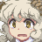

I've heard the rumors about you. You're that human shrine maiden.
I've heard the rumors about you. You're that human shrine maiden. They say that no matter what kind of incident happens up top, you'll be right there resolving it.
They say that no matter what kind of incident happens up top, you'll be right there resolving it. Up top or down here, if a youkai's up to no good then I'll exterminate them.
Up top or down here, if a youkai's up to no good then I'll exterminate them. And that includes anyone who gets in the way of my investigation. Prepare to get squished!
And that includes anyone who gets in the way of my investigation. Prepare to get squished! Aren't you one of the humans who slipped into the Underworld the other day? You never learn, do you? Here you are, back in the Underworld.
Aren't you one of the humans who slipped into the Underworld the other day? You never learn, do you? Here you are, back in the Underworld. Look, this time is special. There's an incident going on up above.
Look, this time is special. There's an incident going on up above. We'll get this wrapped up real quick-like if you stop interfering in our investigation!
We'll get this wrapped up real quick-like if you stop interfering in our investigation! So this is the person Marisa ran into before.
Of course, acting combative is hardly different from what a surface youkai would do...
 What are you muttering to yourself about over there?
What are you muttering to yourself about over there? N-Nothing. Here I come! I remember that face. You're that youkai I fought before.
N-Nothing. Here I come! I remember that face. You're that youkai I fought before. I am, yes. At the time, we were just trespassing by accident...
I am, yes. At the time, we were just trespassing by accident... The surface is going to suffer if we don't get to the bottom of what's happening. Would you mind letting us investigate in peace? You're asking an Underworld youkai to play nice? You're one naive lady!
The surface is going to suffer if we don't get to the bottom of what's happening. Would you mind letting us investigate in peace? You're asking an Underworld youkai to play nice? You're one naive lady! I've heard that tsuchigumo control diseases.
I've heard that tsuchigumo control diseases. You heard right. Not exactly something that can be cut by a sword.
You heard right. Not exactly something that can be cut by a sword. My Hakurouken can cut through confusion. I'll cut through disease as well!
My Hakurouken can cut through confusion. I'll cut through disease as well! If you'll pardon my boldness, doesn't the term "tsuchigumo" basically mean "dirt spider"? Isn't it demeaning? Humans use terms like that, but usually only in a deprecating way. Well, aren't you sharp? Just what I'd expect from a human. In return, why don't I show you the power of this loathsome youkai!
If you'll pardon my boldness, doesn't the term "tsuchigumo" basically mean "dirt spider"? Isn't it demeaning? Humans use terms like that, but usually only in a deprecating way. Well, aren't you sharp? Just what I'd expect from a human. In return, why don't I show you the power of this loathsome youkai! And here I was wondering what sort of place this "Underworld" was. I can't believe you're so uptight around here.
And here I was wondering what sort of place this "Underworld" was. I can't believe you're so uptight around here. A hole in the ground like this is no stage for a vampire like me.
A hole in the ground like this is no stage for a vampire like me. Yeah, says the person who hates the sun and turns into a freaking bat.
Yeah, says the person who hates the sun and turns into a freaking bat. And yet we vampires still rule the surface. That's just how great we are.
And yet we vampires still rule the surface. That's just how great we are. Spider youkai are nothing like normal spiders, huh? Oh, you seem pretty young to have an appreciation for spiders.
Spider youkai are nothing like normal spiders, huh? Oh, you seem pretty young to have an appreciation for spiders. There weren't many other things living in the basement of the mansion.
There weren't many other things living in the basement of the mansion. Hee hee hee, they have lots of babies in their bellies.
Hee hee hee, they have lots of babies in their bellies. ...Y'know what, I'm just not gonna take this conversation any further.
...Y'know what, I'm just not gonna take this conversation any further. Even against someone who wields disease, as long as you give me an opening I can use...! Oh? I bet you're thinking you'd never lose in a fistfight.
Even against someone who wields disease, as long as you give me an opening I can use...! Oh? I bet you're thinking you'd never lose in a fistfight. Well, this tsuchigumo's about to give you a rude awakening!
Well, this tsuchigumo's about to give you a rude awakening! Tsuchigumo—an archetypal Underworld youkai possessing a very loathsome power.
Tsuchigumo—an archetypal Underworld youkai possessing a very loathsome power. I strongly suggest you be careful to avoid letting Sakuya capture. Huh? Where are you going with this?
I strongly suggest you be careful to avoid letting Sakuya capture. Huh? Where are you going with this? I couldn't take it if she caught you and served you up as a delicacy.
I couldn't take it if she caught you and served you up as a delicacy. Tsuchigumo aren't healthy to eat.
...If you already know I'm unhealthy, then you could just not eat me. Oh no, what if Miss Patchouli catches some horrible disease?
 At least I came prepared for this!
At least I came prepared for this! How so?
How so? I brought a surgical mask, some extra soap, and... Look, I'm not going around spreading disease willy-nilly.
I brought a surgical mask, some extra soap, and... Look, I'm not going around spreading disease willy-nilly. People with poor constitutions just happen to get themselves infected and grow weaker on their own.
People with poor constitutions just happen to get themselves infected and grow weaker on their own. That's what I'm afraid of...
That's what I'm afraid of... Youkai Sage. What do you think you're doing, strolling into a place like this?
 You do realize that we hate you down here, right?
You do realize that we hate you down here, right? I understand your hostility. But we're here out of necessity, for the investigation. (...If this vengeful spirit uproar is the result of someone's plan, then the agreement with the surface is already falling apart.) (I doubt there are any grudges being held over the incident with the Komeiji sisters, but still...)
I understand your hostility. But we're here out of necessity, for the investigation. (...If this vengeful spirit uproar is the result of someone's plan, then the agreement with the surface is already falling apart.) (I doubt there are any grudges being held over the incident with the Komeiji sisters, but still...) You were called Yamame, I believe? A phantom from the surface? No, a ghost?
You were called Yamame, I believe? A phantom from the surface? No, a ghost? There's one thing I'd like to ask you. How do the youkai of the Underworld feel about the sages of the surface? Huh? Depends on who you ask, but...
There's one thing I'd like to ask you. How do the youkai of the Underworld feel about the sages of the surface? Huh? Depends on who you ask, but... The Sages are basically the ringleaders who decided to cut us off. I doubt you'll find anyone down here ready to play nice with them.
 I suppose that makes sense...
I suppose that makes sense... This wasn't entirely unexpected, but it's still a shame that we ended up fighting.
This wasn't entirely unexpected, but it's still a shame that we ended up fighting. It's only logical that we'd need to investigate when the cause of the incident is underground.
It's only logical that we'd need to investigate when the cause of the incident is underground. Yeah, we don't care. You still shouldn't make that decision for us. You'll find no shortage of youkai down here that would oppose anything a surface youkai said.
Yeah, we don't care. You still shouldn't make that decision for us. You'll find no shortage of youkai down here that would oppose anything a surface youkai said. But it's so obvious when you look at it logically. Emotions are such a bothersome thing.
But it's so obvious when you look at it logically. Emotions are such a bothersome thing. Ugh, a tsuchigumo. Just my luck. Who're you? You don't look like a regular young'un.
Ugh, a tsuchigumo. Just my luck. Who're you? You don't look like a regular young'un. Well, I know a thing or two about your situation. Relations with the surface aren't simple at all. My honest advice? Just let us do our investigation.
Well, I know a thing or two about your situation. Relations with the surface aren't simple at all. My honest advice? Just let us do our investigation. ...I would never forget this place. It's where the Flying Granary was buried.
And where Murasa and the others were sealed away, by none other than the will of the surface humans...
Isn't it a bit late for a post-mortem review? The strong survive and the weak die out. Hasn't it always been like that? ...You're not wrong, I admit. But that doesn't mean we should just resign ourselves to that indefinitely!
...You're not wrong, I admit. But that doesn't mean we should just resign ourselves to that indefinitely! A tsuchigumo. I wonder how she'll approach...
A tsuchigumo. I wonder how she'll approach... You and Murasa don't have many acquaintances in the Underworld, do you?
You and Murasa don't have many acquaintances in the Underworld, do you? Well, we were sealed here. We couldn't exactly go out for a stroll. But I can still sympathize with her in the sense of being an oppressed youkai. ...We were originally surface youkai. I wonder how they feel about us.
Well, we were sealed here. We couldn't exactly go out for a stroll. But I can still sympathize with her in the sense of being an oppressed youkai. ...We were originally surface youkai. I wonder how they feel about us. Nitori said you tsuchigumo pollute the rivers. That takes perfectly good homes away from little froggies, you know! With a power like this, it's kinda harder NOT to pollute.
Nitori said you tsuchigumo pollute the rivers. That takes perfectly good homes away from little froggies, you know! With a power like this, it's kinda harder NOT to pollute. And aren't you giving off your own weird miasma anyway?
And aren't you giving off your own weird miasma anyway? Eh, curses are fine. They only really hurt humans. A tengu from the surface? Oh yeah, I've heard about someone up there who writes funny articles.
Eh, curses are fine. They only really hurt humans. A tengu from the surface? Oh yeah, I've heard about someone up there who writes funny articles. Don't tell me you're here to make a spectacle out of us for that paper of yours?
 Oh no, not at all. Frankly, I didn't want to come down here in the first place.
Oh no, not at all. Frankly, I didn't want to come down here in the first place. Once we're done here, I'm OUTTA here. So I'd appreciate it if you could just ignore me.
Once we're done here, I'm OUTTA here. So I'd appreciate it if you could just ignore me. Yeah, a likely story. I'll wrap you up in webbing and toss you back to the mountain!
 See! This is exactly why I hate dealing with the Underworld!
See! This is exactly why I hate dealing with the Underworld! Now that it's come to combat, we have no choice but to cross swords with the Underworld.
Now that it's come to combat, we have no choice but to cross swords with the Underworld. Though considering Yukari has her own backers, I probably won't have to write an explanation and apology... A surface tengu, huh? If you just scram right away I'll forget I ever saw you.
Though considering Yukari has her own backers, I probably won't have to write an explanation and apology... A surface tengu, huh? If you just scram right away I'll forget I ever saw you. Sorry, but I'll have to decline. A shield never retreats and leaves the ones it's protecting undefended.
Sorry, but I'll have to decline. A shield never retreats and leaves the ones it's protecting undefended. Aw geez, I wonder what people will say about me if they ever learn I went to the Underworld... A rotten tengu with a bad personality, a bringer of bad luck, a lawbreaker... Sheesh, this is how you surface folk always are. To you, us Underworlders are always just "dirty" or something. Hey, I never said that. I don't get along with the types of people who say that stuff either.
Aw geez, I wonder what people will say about me if they ever learn I went to the Underworld... A rotten tengu with a bad personality, a bringer of bad luck, a lawbreaker... Sheesh, this is how you surface folk always are. To you, us Underworlders are always just "dirty" or something. Hey, I never said that. I don't get along with the types of people who say that stuff either. Loathed by all, driven away from the surface...
Loathed by all, driven away from the surface... One wrong step and maybe I would have ended up like the rest of you. You mean a human like you has been shunned by other humans? Those surface dwellers... none of them are innocent, are they? It's all in the past now, and they had their reasons. I don't blame the modern humans for it.
One wrong step and maybe I would have ended up like the rest of you. You mean a human like you has been shunned by other humans? Those surface dwellers... none of them are innocent, are they? It's all in the past now, and they had their reasons. I don't blame the modern humans for it. Yamame Kurodani. I had hoped we could perform this investigation without fighting, but you've forced our hand.
You're acting like you're the reasonable one here, but didn't you come down here with all the rest of 'em? You've got no right to say anything after you stepped into OUR territory. Better than sending Reimu by herself. Us adults have our responsibilities!
Better than sending Reimu by herself. Us adults have our responsibilities! Nitori's already said all sorts of things, but I've got my own bone to pick with tsuchigumo. A harvest god? How would we have affected you...?
Nitori's already said all sorts of things, but I've got my own bone to pick with tsuchigumo. A harvest god? How would we have affected you...? The river wasn't the only thing you were polluting. The soil itself was getting mucked up too! This is for all the crops that never grew! This grudge ends here and now! You dare try to take out a grudge on an Underworld youkai? You've definitely got some guts.
The river wasn't the only thing you were polluting. The soil itself was getting mucked up too! This is for all the crops that never grew! This grudge ends here and now! You dare try to take out a grudge on an Underworld youkai? You've definitely got some guts. Once the fallen leaves rot away, they return to the earth. In a certain sense, doesn't that mean that... they become the Underworld's ceiling? In a hole this deep, it doesn't matter what they end up as. The world you live in and ours are just too different to compare.
Once the fallen leaves rot away, they return to the earth. In a certain sense, doesn't that mean that... they become the Underworld's ceiling? In a hole this deep, it doesn't matter what they end up as. The world you live in and ours are just too different to compare. But soil is soil. I'm sure we're sharing it, somewhere...
But soil is soil. I'm sure we're sharing it, somewhere... So winter has come here as well... I see that even in this underground world, there are still the four seasons. When the heat escapes it gets cold, and when it builds up it gets hot. That's all it is. Don't try to lump the surface and the Underworld together like that.
So winter has come here as well... I see that even in this underground world, there are still the four seasons. When the heat escapes it gets cold, and when it builds up it gets hot. That's all it is. Don't try to lump the surface and the Underworld together like that. Such distinctions are meaningless before nature. The two places are no different in the sense that the changing seasons still signify the circle of life. Well, SOMEONE clearly likes to run their mouth like they know everything...!
Such distinctions are meaningless before nature. The two places are no different in the sense that the changing seasons still signify the circle of life. Well, SOMEONE clearly likes to run their mouth like they know everything...! Man... I finally get a chance to relax in some hot springs, and now it looks like my shoulders are gonna get stiff all over again.
Man... I finally get a chance to relax in some hot springs, and now it looks like my shoulders are gonna get stiff all over again. I just wanna take a day off, drink some tea, and chat with my friends. Yeah, I hear that. I was just about to head back to my web for some R&R.
I just wanna take a day off, drink some tea, and chat with my friends. Yeah, I hear that. I was just about to head back to my web for some R&R. Oh, someone gets it. You wouldn't happen to know of any hot springs around here...? I'd love to keep chatting, but now isn't really the time. You should swing by again sometime.
Oh, someone gets it. You wouldn't happen to know of any hot springs around here...? I'd love to keep chatting, but now isn't really the time. You should swing by again sometime. Hey, tsuchigumo. How ya been? ...! You're Suika Ibuki! Haven't seen you around. So you've been with the surface dwellers?
Hey, tsuchigumo. How ya been? ...! You're Suika Ibuki! Haven't seen you around. So you've been with the surface dwellers? I went out to have a little fun. Then I just kinda stuck around. ...Sounds just like every oni I know. Nothing stops you girls. That reminds me, though—Yuugi Hoshiguma was wondering about you.
I went out to have a little fun. Then I just kinda stuck around. ...Sounds just like every oni I know. Nothing stops you girls. That reminds me, though—Yuugi Hoshiguma was wondering about you. Oh yeah? I should have drinks with her again sometime.
 You said earlier that the surface had forced all of its misfortune underground, but... Accepting Gensokyo's misfortune is my duty as a misfortune god. True, looks like you could take care of the misfortune that's already built up. But what about the sources of that misfortune? Not even you have the power to do anything about those.
You said earlier that the surface had forced all of its misfortune underground, but... Accepting Gensokyo's misfortune is my duty as a misfortune god. True, looks like you could take care of the misfortune that's already built up. But what about the sources of that misfortune? Not even you have the power to do anything about those. Actually, if these people are willing to aid me, then...
Actually, if these people are willing to aid me, then... ...From you, it seems like all sound is being absorbed. Huh? Sound...? It just gets sucked into your depths, never to return. That's how deep-rooted your experiences are.
...From you, it seems like all sound is being absorbed. Huh? Sound...? It just gets sucked into your depths, never to return. That's how deep-rooted your experiences are. Being sick isn't happy at all! Happy? What kind of nonsense are you coming into the Underworld spouting? Save your babbling for the surface. Being happy has nothing to do with either the surface or the Underworld!
Being sick isn't happy at all! Happy? What kind of nonsense are you coming into the Underworld spouting? Save your babbling for the surface. Being happy has nothing to do with either the surface or the Underworld! Disease, huh? Not what I'd call a feel-good experience.
Disease, huh? Not what I'd call a feel-good experience. Seeing someone stuck in bed all day gets me worried. Look, I'm not going around spreading disease willy-nilly. Do you ghosts even get sick? Good point. Why was I worrying about this again?
Seeing someone stuck in bed all day gets me worried. Look, I'm not going around spreading disease willy-nilly. Do you ghosts even get sick? Good point. Why was I worrying about this again? So this is a tsuchigumo, a youkai that spreads diseases. What's with you? I can smell something, but... Wait, I know that smell! Indeed, I'm a Lunarian doctor. I cure any and all diseases. A natural enemy then. But can the wisdom of the surface really handle my diseases?
So this is a tsuchigumo, a youkai that spreads diseases. What's with you? I can smell something, but... Wait, I know that smell! Indeed, I'm a Lunarian doctor. I cure any and all diseases. A natural enemy then. But can the wisdom of the surface really handle my diseases? If you think my wisdom is confined to surface matters, then you are gravely mistaken.
If you think my wisdom is confined to surface matters, then you are gravely mistaken. So this is what a tsuchigumo looks like. I should get a closer look. You wanna get closer? You're one reckless human. Scrawny girls like you easily succumb to diseases, you know. No need to worry. I do hate to suffer, but I've got Eirin.
So this is what a tsuchigumo looks like. I should get a closer look. You wanna get closer? You're one reckless human. Scrawny girls like you easily succumb to diseases, you know. No need to worry. I do hate to suffer, but I've got Eirin. What's that supposed to mean? Are you surface dwellers touched in the head or something?
What's that supposed to mean? Are you surface dwellers touched in the head or something? A youkai who spreads disease? Ugh, I'd just as soon not deal with this. I don't think I have much to worry about with Master around though. Whoa, that body of yours...!
A youkai who spreads disease? Ugh, I'd just as soon not deal with this. I don't think I have much to worry about with Master around though. Whoa, that body of yours...! Huh? What about it? Your antibodies are so built up, most diseases wouldn't remotely faze you. This isn't normal. Has someone been using you as a test subject?
Huh? What about it? Your antibodies are so built up, most diseases wouldn't remotely faze you. This isn't normal. Has someone been using you as a test subject? I've got no idea what you're talking about...
I've got no idea what you're talking about... Ew, I'm up against some disgusting youkai... An Earth rabbit? You look young, but you're quite the veteran.
Ew, I'm up against some disgusting youkai... An Earth rabbit? You look young, but you're quite the veteran. I've gotten this far by paying close attention to my health.
I've gotten this far by paying close attention to my health. And now I run into a disease youkai? Of all the luck...
And now I run into a disease youkai? Of all the luck... Hey, tsuchigumo! This time I'm gonna squish you good! Even the higher-ups on the mountain told me to watch out for tsuchigumo! I haven't broken any of your laws, but fine, whatever.
Hey, tsuchigumo! This time I'm gonna squish you good! Even the higher-ups on the mountain told me to watch out for tsuchigumo! I haven't broken any of your laws, but fine, whatever. If you want a fight, then I'm game. I'll hit you right back!
Oh, you're that firefly youkai from before. You were really into that lecture you were giving me.
 Um, sorry about that. I just suddenly started saying whatever popped into my head.
Um, sorry about that. I just suddenly started saying whatever popped into my head. But I really do believe we bug youkai should look out for each other.
But I really do believe we bug youkai should look out for each other. Hmph. Look out for each other?
Let me ask you something. Do you know how tsuchigumo are born? Huh? What do you mean, how? See, you don't know a thing about me. All that talk about looking out for each other is a bunch of idealistic nonsense.
If you got that, then shut up and get out of my face! Yes, we're violating the agreement, but we have good reason.
Yes, we're violating the agreement, but we have good reason. Could you please let us through, for the humans of the surface?
And why should we have to do anything just 'cause you're sad and worried about something? I suppose that's logical from your standpoint...
I suppose that's logical from your standpoint... But I'm sorry, we'll do this by force if we have to. Well, I hope you had fun pretending we had a say in this. You do know about the agreement, right?
But I'm sorry, we'll do this by force if we have to. Well, I hope you had fun pretending we had a say in this. You do know about the agreement, right? Um, uh, well... Sheesh, they aren't even telling the next generation up there? What the hell is that Sage doing? Look, we've got a non-interference agreement between the surface and the Underworld. And when you break it...
Um, uh, well... Sheesh, they aren't even telling the next generation up there? What the hell is that Sage doing? Look, we've got a non-interference agreement between the surface and the Underworld. And when you break it... ...What? What happens?
...What? What happens? Then you're dinner!

Hawawawa! Sheesh, a lookalike, huh? You look pretty happy about it though? I mean, c'mon, you don't get something this crazy every day, right? You've gotta at least have the skills to make this fun. Good point. In that case...
I mean, c'mon, you don't get something this crazy every day, right? You've gotta at least have the skills to make this fun. Good point. In that case... Since we're here, let's make this worth remembering! Wait, you're with the humans, Kisume?
Since we're here, let's make this worth remembering! Wait, you're with the humans, Kisume? Wah! I'm so sorry, Yamame! You're sorry? Then you really are with 'em?
Wah! I'm so sorry, Yamame! You're sorry? Then you really are with 'em? Ah, that's not what I meant...
Ah, that's not what I meant... (I just blurted that out, and now she's got a weird misunderstanding.)
(I just blurted that out, and now she's got a weird misunderstanding.) (But maybe this is a good excuse to have some fun playing with Yamame.)
(But maybe this is a good excuse to have some fun playing with Yamame.) ... Wait, is this thing with the surface dwellers? With something like this coming underground, there's no way this isn't turning into a big deal. Then I'd guess I'd better greet you properly!
... Wait, is this thing with the surface dwellers? With something like this coming underground, there's no way this isn't turning into a big deal. Then I'd guess I'd better greet you properly! I've been in the youkai exterminating business for a long time now, but this is my first time meeting one of you Underworld folks.
I've been in the youkai exterminating business for a long time now, but this is my first time meeting one of you Underworld folks. I'll show off as much as I can here! And spread the name of the magician Marisa Kirisame much wider than Reimu's!
I'll show off as much as I can here! And spread the name of the magician Marisa Kirisame much wider than Reimu's! Come at me!
Come at me! Sorry, Shanghai. I'll clean you up later.
Sorry, Shanghai. I'll clean you up later. We kappa are super fussy about our water.
We kappa are super fussy about our water. ...Double drat. It really was an entrance to the Underworld.
...Double drat. It really was an entrance to the Underworld. It was just a coincidence. If we'd known it led to the Underworld, we wouldn't have come.
It was just a coincidence. If we'd known it led to the Underworld, we wouldn't have come. Sickness, huh? That reminds me, earlier I caught a cold.
Sickness, huh? That reminds me, earlier I caught a cold. Even though I'm normally so healthy, I ended up making Yuuka worried...
Even though I'm normally so healthy, I ended up making Yuuka worried... But then again, I got to be nursed back to health. It makes me smile just thinking about it!
But then again, I got to be nursed back to health. It makes me smile just thinking about it! Your power over diseases is just too dangerous around humans.
Your power over diseases is just too dangerous around humans. I'll take on your misfortune. I won't let you lay a hand on them!
I'll take on your misfortune. I won't let you lay a hand on them! I'm Yamame-chan, the Idol of the Underworld!
I'm Yamame-chan, the Idol of the Underworld! Just saying that was an option too.
Just saying that was an option too.